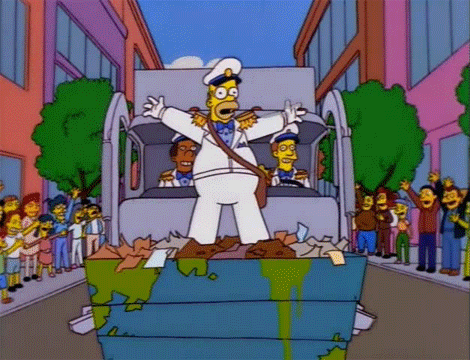

Suiza: Un modelo para el mundo, que se encarga de reciclar el 52% de toda su basura.
Austria: Recicla el 47.9% de toda la basura generada en todo el país.
Alemania: Recicla el 48% de toda su basura.
Holanda: Se encarga de reciclar el 46% de su basura.
Ámerica Latina es la región que menos recicla en el mundo
